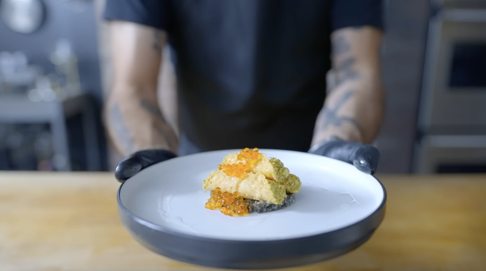

Savory cannoli from "The Bear"

Elevated savory cannoli
This is a recipe for a savory cannoli from Season 2 Episode 9 titled "Omelette"
This is a very complicated recipe with 4 components:
- Parmesan Shells
- Mortadella Cream
- Shallot Oil
- Olive Tapenade
This dish is probably the greatest looking dish on the show and it has a great story behind it.
INGREDIENTS:
Parmesan Shells Ingredients:
- 60 g parmesan cheese, finely grated
- ¾ tsp cornstarch
Mortadella Cream Ingredients:
- 6 oz mortadella, chopped
- 3 ½ oz whole milk
- 2 ¼ oz heavy cream, cold
- ⅛ tsp freshly grated nutmeg
- ⅛ tsp white pepper
- Kosher salt
Shallot Oil Ingredients:
- 6 oz neutral oil
- 2 small shallots, peeled + sliced
Olive Tapenade Ingredients:
- 1 Cup pitted oil-packed cerignola black olives (with ~2 Tbsp of the oil)
- ¼ Cup olive oil (from the black olives)
- 2 Tbsp lemon juice
- 1 ½ Tbsp capers, drained
- 2 garlic cloves
- 3 anchovy filets
- Kosher salt
- Freshly ground black pepper
Savory Cannoli Ingredients:
- Parmesan Shells
- Mortadella Cream
- ½ Cup pistachios, finely chopped
- Olive Tapenade
- 1 Tbsp salmon roe
- Shallot Oil
RECIPES:
Parmesan Shells:
- Move the oven rack to the top third of the oven and preheat the oven to 400 °F. Prepare a large sheet tray with a silicone baking mat.
- Combine the parmesan cheese and cornstarch in a small bowl, and toss to combine.
- Distribute 15 grams of parmesan into a 3-inch pastry cutter placed over the silicone baking mat. Optionally, for mini shells, distribute 4 grams of parmesan cheese into a 1-inch pastry cutter. Compress the parmesan into a ¼ inch round, then carefully remove the mold.
- Bake the parmesan for 6-8 minutes or until golden brown and bubbly.
- Remove the rounds from the oven and let cool for 5-10 seconds, then carefully, roll the rounds around a 1-inch dowel (or a ⅓-inch dowel for mini shells).
- Let the parmesan shells cool for 15-20 seconds before unmolding. Let cool completely on a rack before filling.
Mortadella Cream:
- Add the mortadella to the base of a high-powered blender. Blend until smooth.
- Heat the milk to a bare simmer, then with the blender running, pour the hot milk into the blended mortadella. Continue blending for 2 minutes or until the mixture is extremely smooth.
- Transfer the mixture to a medium bowl, then place the bowl in an ice bath. Cool the mixture to room temperature, making sure to stir the mixture periodically to ensure even cooling.
- Meanwhile, whip the heavy cream to medium peaks.
- Fold the cream into the cooled mortadella mixture and season with nutmeg, pepper, and salt to taste.
- Transfer the mixture to a piping bag and refrigerate until ready to use.
Shallot Oil:
- Combine the oil and shallots in a small saucepan. Heat over medium-low heat and cook until the shallots are crispy, about 15-20 minutes
- Strain and set aside the oil to cool to room temperature. Reserve the crispy shallots for another use.
Olive Tapenade:
- Combine the olives (with the oil), lemon juice, capers, garlic, and anchovy filets in the base of a food processor.
- Pulse until the ingredients are well combined and finely chopped, but stop before the mixture becomes a paste.
- Season the tapenade to taste with salt and pepper.
Savory Cannoli:
- Fill the Parmesan Shells with the Mortadella Cream. Dip each end of the cannoli into the chopped pistachios.
- Add a small mound of Olive Tapenade to the center of a serving plate of choice. Place the cannoli over the tapenade and top with the roe and a drizzle of Shallot Oil.
- Serve immediately.
Original recipe is from Binging with babish